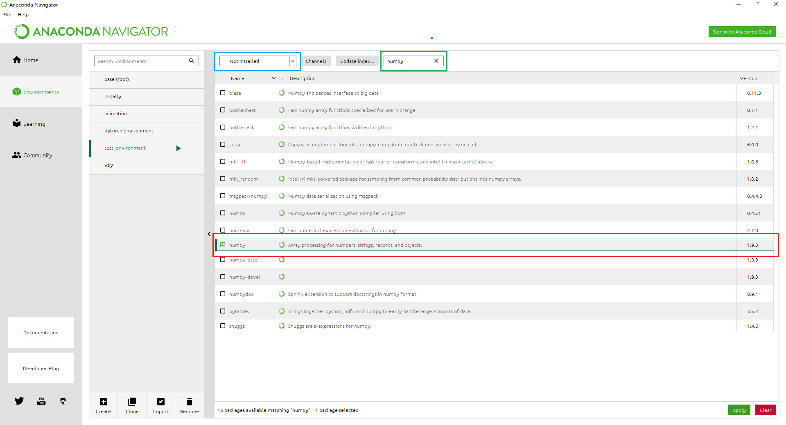
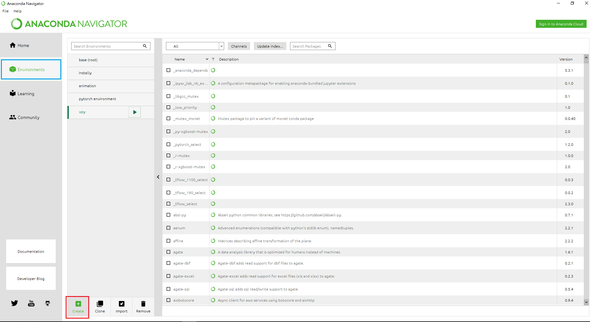

Anaconda Navigator
Anaconda Navigator 是一個圖形化介面。以往加裝python模組、甚至一些開發環境時，
是需要使用一些指令操作的，然而在這個介面下，我們大多只要按按滑鼠，打幾個關鍵字就可以完成任務。
並且，在此介面中，也可以完成虛擬環境的建造，滿足各種模組在支援性上的問題。
下面讓我們簡單介紹 Anaconda Navigator。不過，因為一開始安裝完Anaconda後，
不像一些應用程式會在桌面建立捷徑，怕有些人會找不到 Anaconda Navigator ，這裡提醒大家可以利用Search功能來找到他。
Home
打開 Navigator 應用程式後一開始畫面會出現在首頁，也就是左邊欄位為 "Home" 的地方。
此頁面中主要整合了各個開發環境的應用程式，可以在此畫面中安裝這些應用程式。
此外，若擁有多個虛擬環境的使用者，可以由圖中藍色框框處更換想要安裝應用程式的環境。

Environment
左側欄位 "Home" 的下方為 "Environment"，此頁面顧名思義是與環境有關，
我們可以在這裡創建虛擬環境、安裝模組。
安裝模組
當我們要用到一個新的模組時，就必須在環境中安裝這個模組。
在 Anaconda Navigator 裡我們可以用以下方式來安裝模組。
在圖中藍色框框處的下拉式選單，選擇 "not installed" 或是 "All" ，在綠色方格裡輸入要查詢的模組名稱。
找到要安裝的模組後，點選右下角 "Apply" 字樣的綠色按鈕。

接著會跳出一個小方格視窗，再次點擊 "Apply" ，即會安裝模組。
創建虛擬環境
從推出開始，Python 的版本已經經過多次更新，因此，當一些模組更新的沒有 Python 快，
又或者是撰寫他的人已經不想在更新時，就會有某些模組不能在新版 Python 裡使用的情形發生；
反之，也有只為新版本設計的模組，若不是新版本 Python 就無法使用。
Anconda 提供我們一個很方便的方式來解決這些模組版本不相容的問題，那就是創建虛擬環境!
我們可以創建很多個虛擬環境，在每個不同的環境中，安裝不同版本的 Python、不同的模組，滿足各種使用上的需求。
另外，創建一個新的環境還有一很大的好處，有些模組是會互相干擾的，如果你把所有模組都裝在同一個環境，
那會有一定機會使你的 python 掛掉喔!
那麼，下面就帶大家創建一個新的虛擬環境~~
首先，點擊紅色框框處創建新環境。(若還沒創建任何虛擬環境，你的頁面裡應該只有一個環境 "base(root)" )。

接著會跳出方格視窗，我們需要鍵入想要的名稱、以及選擇要安裝的 Python 版本。之後按下 "Create" 鍵。
!!新建的虛擬環境不會預先安裝 Spyder 或 VS Code 等開發程式的app，需到 Home 頁面點選安裝需要的版本。